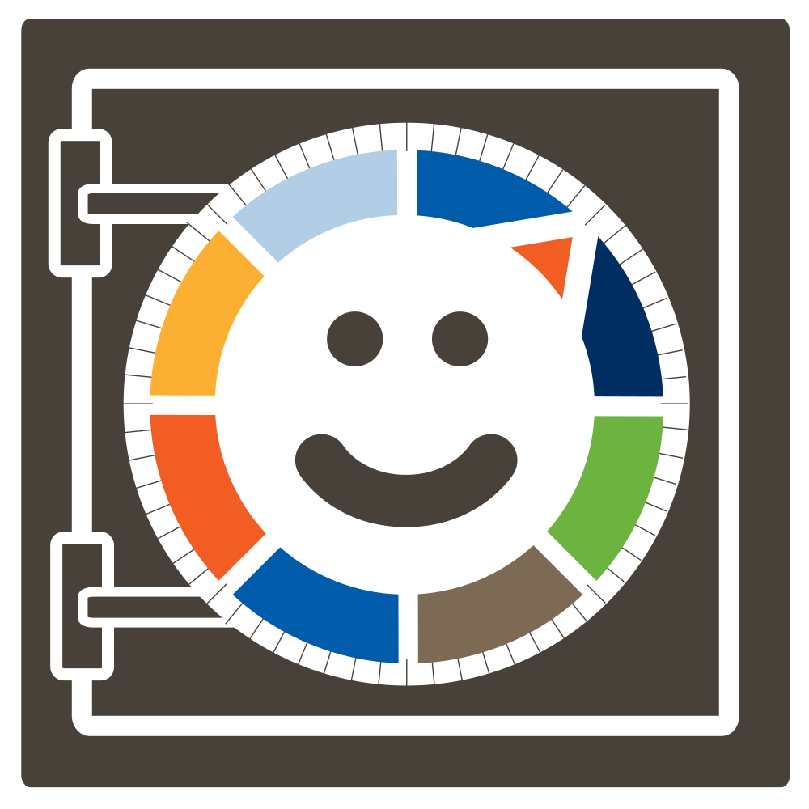

Reducing Information Poverty
Access, Inclusion, Content, and Engagement
What does Access to Information mean?
Access to information is not binary - it involves the costs associated with that access.
Usability and Accessibility
Usable Security Apps By Leveraging End Users 
The Challenge
Inclusion and Accessibility
It's not just sight
Solutions
Empathy matters.
Building feedback loops and real-world connections to marginalized communities is key to effective programs.
Human Centered Design is as valid in program design as app development
Engagement is … Educational.
Get in touch
Megan DeBlois,
Program Manager
Megan@USABLE.tools